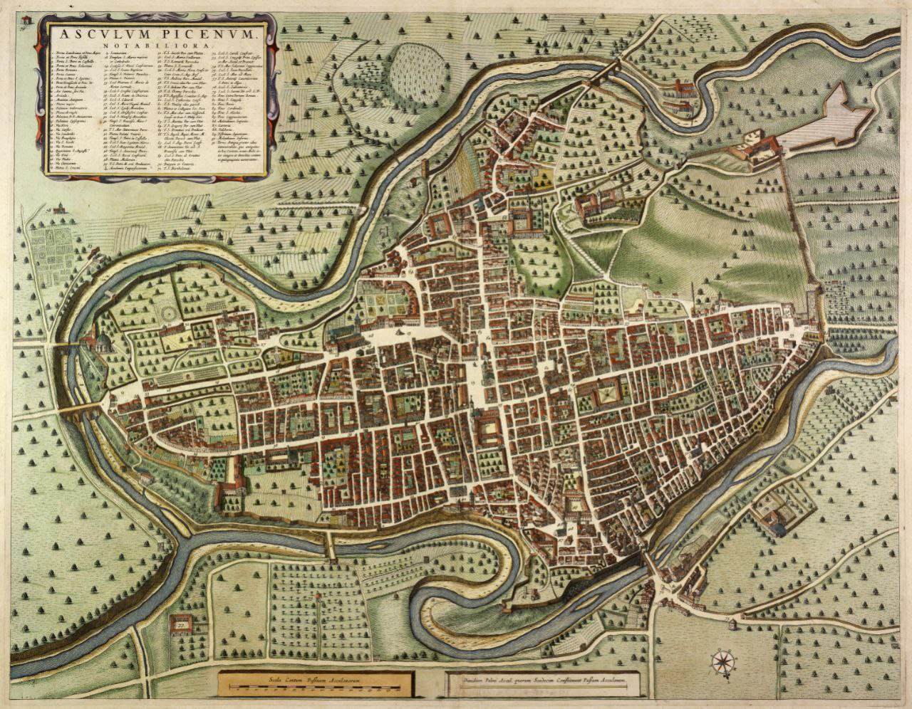

Mappa della Città e Mappa del Territorio City Map and Territory Map
La realizzazione delle mappe ha richiesto un accurato lavoro di ricerca e consultazione, volto a definire con la massima precisione possibile i confini della città e a posizionare correttamente le icone relative a chiese, piazze, palazzi, porte cittadine e castelli. Per tracciare i confini dei quartieri nella Mappa della Città, abbiamo fatto riferimento alla descrizione contenuta nella rubrica 15, Libro IV, Statuti del Comune. Tale fonte, tuttavia, non include una delineazione dei confini dei sestieri, la cui definizione si è rivelata particolarmente complessa. A tal fine, abbiamo consultato la pubblicazione Il Catasto ascolano del 1381 di P. Varese e G. Angelini Rota, tenendo inoltre in considerazione la mappa di Ascoli Piceno realizzata da Emidio Ferretti nel 1646, pur consapevoli della distanza cronologica tra questa e il periodo preso in esame.

Disegno originale di Emidio Ferretti, 1646. Diritti: Biblioteca Nazionale Marciana, Venezia, Italia.
Particolarmente interessante risulta il dettaglio contenuto nello statuto sopra citato per quanto riguarda il sestiere di Ponte Majore, i cui confini sono descritti con relativa chiarezza, permettendoci così una ricostruzione più precisa:
"...che lu sexterio de Ponte majore se extenda et vada per fine a la via appresso a la casa jà de Muctio de Johanni de Bernardo et per fine a lu fosso jà de la ciptadella et perfine a la ecclesia de Sancta Maria de le virgene. Et quello ch'è adjuncto ad quello sexterio de Ponte majore è tolto a lu sexterio de Sancto Pedro de Adammo."
In assenza di indicazioni univoche, è stato necessario compiere alcune scelte interpretative, tracciando confini anche in presenza di elementi incerti, come nel caso del quartiere di Sancto Venantio.
Per quanto riguarda la Mappa del Territorio, il posizionamento dei castelli è stato effettuato utilizzando riferimenti geospaziali dei siti ancora oggi esistenti nel territorio ascolano. Per identificare i castelli non più esistenti, ci siamo avvalsi delle risorse messe a disposizione dall'Associazione Culturale Habitual Tourist, in particolare della mappa dei castelli ascolani.
The creation of these maps required meticulous research and consultation to define the city's boundaries as accurately as possible and to position icons representing churches, squares, palaces, city gates and castles correctly. To outline the boundaries of the districts (quartieri) in the City Map, we referred to the description found in Rubric 15, Book IV, of the Municipal Statutes. However, this source does not delineate the boundaries of the sub-districts (sestieri), which proved particularly challenging to define. For this reason, we consulted the publication Il Catasto ascolano del 1381 by P. Varese and G. Angelini Rota, also taking into account the map of Ascoli Piceno created by Emidio Ferretti in 1646, while remaining aware of the chronological gap between this document and the period under study.
Original drawing by Emidio Ferretti, 1646. Rights: Biblioteca Nazionale Marciana, Venezia, Italia.
Particularly noteworthy is the level of detail provided in the aforementioned statute concerning the sub-district of Ponte Majore, whose boundaries are described with relative clarity, allowing for a more precise reconstruction:
"...che lu sexterio de Ponte majore se extenda et vada per fine a la via appresso a la casa jà de Muctio de Johanni de Bernardo et per fine a lu fosso jà de la ciptadella et perfine a la ecclesia de Sancta Maria de le virgene. Et quello ch'è adjuncto ad quello sexterio de Ponte majore è tolto a lu sexterio de Sancto Pedro de Adammo."
In the absence of definitive indications, it was necessary to make interpretative decisions, drawing boundaries even where the available information was uncertain, as in the case of the district of Sancto Venantio.
Regarding the Territory Map, the placement of the castles was based on the geographical coordinates of sites that still exist in the Ascoli area today. To identify castles that no longer exist, we relied on resources provided by the cultural association Habitual Tourist, particularly the map of Ascoli's castles.
Categorie Categories
Le categorie costituiscono uno strumento interpretativo fondamentale per l'esplorazione degli Statuti di Ascoli, poiché consentono di organizzare e interrogare il testo secondo nuclei tematici ricorrenti. La loro definizione nasce da un'attenta lettura del corpus statutario e mira a restituire la complessità normativa del testo, senza semplificarne eccessivamente i contenuti.Le categorie selezionate riflettono ambiti centrali della vita politica, sociale, economica e religiosa della comunità ascolana, permettendo di individuare continuità, ricorrenze e relazioni tra rubriche appartenenti a libri diversi. Questo approccio consente all'utente di accedere al testo non solo seguendo la struttura originale degli Statuti, ma anche attraverso percorsi tematici trasversali, pensati per favorire sia la ricerca specialistica sia una consultazione esplorativa.L'assegnazione delle categorie è stata effettuata in modo interpretativo, sulla base del contenuto normativo delle rubriche, e rappresenta una proposta di lettura che affianca e valorizza la struttura originale del testo.
Categories represent a key interpretative tool for exploring the Statutes of Ascoli, as they allow the text to be organised and queried according to recurring thematic areas. Their definition is the result of a close reading of the statutory corpus and aims to reflect the normative complexity of the text without oversimplifying its content. The selected categories correspond to central aspects of the political, social, economic, and religious life of the community of Ascoli, making it possible to identify continuities, recurring themes, and connections between rubrics belonging to different books. This approach enables users to access the text not only through its original structure, but also via transversal thematic paths, designed to support both scholarly research and exploratory browsing. The attribution of categories has been carried out in an interpretative manner, based on the normative content of each rubric. These categories are intended to complement and enhance the original structure of the Statutes.
Persone People
Gli Statuti di Ascoli menzionano un ampio numero di persone, che includono sia individui direttamente coinvolti nella vita amministrativa, giuridica e sociale della città, sia figure storiche e religiose di più ampia rilevanza. La sezione Persone raccoglie e organizza sistematicamente tali riferimenti, offrendo un ulteriore livello di accesso al testo. Per alcune persone citate negli Statuti è stato possibile ricavare informazioni direttamente dal testo, come incarichi, ruoli istituzionali o luoghi di residenza; tali dati sono stati normalizzati e resi consultabili nella scheda dedicata. Accanto a queste, compaiono figure storiche e religiose per le quali non sono presenti informazioni contestuali negli Statuti: in questi casi, quando possibile, è stato fornito un collegamento a risorse esterne, in particolare a Wikidata, per consentire un approfondimento. Questo sistema permette di distinguere tra persone storicamente attestate nel contesto locale e figure di riferimento più ampio, mantenendo al contempo una rete coerente di rimandi interni ed esterni che arricchisce la comprensione del testo statutario.
The Statutes of Ascoli mention a wide range of individuals, including both persons directly involved in the administrative, legal, and social life of the city, and historical or religious figures of broader significance. The People section systematically collects and organises these references, providing an additional level of access to the text. For some individuals mentioned in the Statutes, it was possible to extract information directly from the text, such as offices held, institutional roles, or places of residence; these data have been normalised and made available in the corresponding entries. Alongside these, the project includes historical and religious figures for whom no contextual information is provided in the Statutes themselves: in such cases, whenever possible, links to external resources—particularly Wikidata—have been included to allow further investigation. This system makes it possible to distinguish between individuals historically attested in the local context and figures of wider reference, while maintaining a coherent network of internal and external links that enhances the understanding of the statutory text.
Calendario delle Feste Calendar of Festivities
Le feste religiose rivestivano un ruolo centrale nella vita della comunità ascolana, al punto che gli Statuti del Popolo - Libro II, rubrica 1 - prescrivevano l'obbligo per tutta la popolazione di celebrarle, vietando espressamente ogni tipo di attività lavorativa, salvo in alcuni casi specifici. Gli statuti riportano un lungo elenco di festività religiose da celebrare, tra cui spicca, per importanza, la festa di Sant'Emidio, patrono della città. Per la realizzazione del Calendario delle Feste, è stato scelto l'anno 1496, anno della stampa degli Statuti. Fondamentale è stato l'utilizzo del volume Cronologia, Cronografia e Calendario Perpetuo di A. Cappelli (1998), che ha fornito gli strumenti necessari per identificare e collocare correttamente le festività, in particolare quelle mobili.
Riferimento: A. Cappelli, Cronologia, Cronografia e Calendario Perpetuo. Dal principio dell'era cristiana ai nostri giorni, Settima edizione riveduta, corretta e ampliata a cura di Marino Viganò, Editore Ulrico Hoepli, Milano, 1998, p. 60 e pp. 137-189.
Religious festivities played a central role in the life of the Ascoli community, to the extent that the Statuti del Popolo - Book II, Rubric 1 - required the entire population to observe them, explicitly prohibiting all forms of work, except in specific cases. The Statutes include a long list of religious celebrations to be observed, the most important of which is the Feast of Sant'Emidio, the city's patron saint. The year 1496 was chosen for the creation of the festival calendar, corresponding to the printing of the Statutes. The volume Cronologia, Cronografia e Calendario Perpetuo by A. Cappelli (1998) was essential to this work, providing the necessary tools to accurately identify and place the festivals, especially the movable ones.
Reference: A. Cappelli, Cronologia, Cronografia e Calendario Perpetuo. Dal principio dell'era cristiana ai nostri giorni, Seventh revised, corrected and expanded edition edited by Marino Viganò, Ulrico Hoepli Publisher, Milan, 1998, p. 60 and pp. 137-189.
Entità cliccabili nel testo degli Statuti Clickable entities in the text of the Statutes
All'interno del testo delle rubriche, i riferimenti a persone, luoghi ed eventi sono stati marcati e resi interattivi tramite pulsanti colorati cliccabili. Questa scelta consente di collegare direttamente il testo statutario alle sezioni tematiche del sito, facilitando una navigazione non lineare e orientata all'approfondimento. Attraverso questi collegamenti, l'utente può accedere alle schede dedicate alle persone, al Calendario delle Feste, alla Mappa della Città o alla Mappa del Territorio, mantenendo sempre un forte legame tra il dato testuale e la sua contestualizzazione storica e spaziale. Tale soluzione mira a valorizzare il testo degli Statuti come nodo centrale di una rete di informazioni interconnesse, favorendo una lettura dinamica e multilivello.
Within the text of the rubrics, references to people, places, and events have been marked and made interactive through clickable buttons. This choice allows the statutory text to be directly linked to the thematic sections of the website, facilitating non-linear navigation and encouraging deeper exploration. Through these links, users can access dedicated pages for people, the Calendar of Festivities, the City Map, or the Territory Map, while maintaining a close connection between the textual data and its historical and spatial context. This approach aims to enhance the Statutes as the central node of a network of interconnected information, supporting a dynamic and multi-layered reading experience.
Struttura e schema XML-TEI Structure and XML-TEI schema
Gli Statuti di Ascoli includono l'introduzione, il volume degli Statuti del Comune, il volume degli Statuti del Popolo e la conclusione. Questa macrostruttura è stata riprodotta nello schema XML per la codifica del testo.
Al loro interno, i volumi degli Statuti del Comune e quelli del Popolo hanno una struttura analoga. Essi cominciano con l'introduzione al volume, seguita dai libri (4 per gli Statuti del Comune e 5 per quelli del Popolo). Ogni libro è composto dall'indice, seguito da una breve introduzione che annuncia l'inizio effettivo del contenuto del libro (fatta eccezione per i libri 4 e 5 degli Statuti del Popolo) e dal contenuto, cioè le rubriche. Il numero di rubriche varia per ogni libro, da un minimo di 14 a un massimo di 116. Ogni rubrica contiene il titolo, il numero progressivo e il testo. Inoltre, il volume degli Statuti del Popolo presenta una breve frase conclusiva per decretare la fine del volume.
The Statutes of Ascoli include the introduction, the volume of the Municipal Statutes, the volume of the People's Statutes, and the conclusion. This macro-structure has been reproduced in the XML schema for text encoding.
Within them, the volumes of the Municipal Statutes and those of the People have a similar structure. They begin with the introduction to the volume, followed by the books (4 for the Municipal Statutes and 5 for those of the People). Each book consists of an index, followed by a brief introduction announcing the actual start of the book's content (with the exception of books 4 and 5 of the People's Statutes) and the content itself, i.e., the rubrics. The number of rubrics varies for each book, ranging from a minimum of 14 to a maximum of 116. Each rubric contains the title, the progressive number, and the text. Furthermore, the volume of the People's Statutes presents a brief concluding sentence to decree the end of the volume.
Oltre alla struttura del corpo del testo, il file XML-TEI include nel teiHeader una serie di liste e strumenti di classificazione che consentono di descrivere e organizzare in modo strutturato le entità e i temi presenti negli Statuti. In particolare, sono state definite liste dedicate alle persone (<listPerson>), ai luoghi (<listPlace>) e agli eventi (<listEvent>) citati nel testo.
In addition to the structure of the text body, the XML-TEI file includes within the teiHeader a set of lists and classification tools designed to describe and organise in a structured way the entities and themes mentioned in the Statutes. In particular, dedicated lists have been created for people (<listPerson>), places (<listPlace>), and events (<listEvent>) cited in the text.
Ogni voce delle liste è identificata da un xml:id stabile e, quando possibile, arricchita da informazioni descrittive e collegamenti a risorse esterne autorevoli. Le occorrenze di persone, luoghi ed eventi all’interno delle rubriche sono collegate alle rispettive voci di lista tramite rimandi espliciti, permettendo una navigazione coerente tra il testo e le sezioni di approfondimento del sito e favorendo la normalizzazione e il riuso dei dati. Each list entry is assigned a stable xml:id and, whenever possible, enriched with descriptive information and links to authoritative external resources. Occurrences of people, places, and events within the rubrics are explicitly linked to their corresponding list entries, enabling consistent navigation between the text and the thematic sections of the website, while supporting data normalisation and reuse.
Il teiHeader include inoltre una tassonomia delle categorie tematiche adottate nel progetto, definita tramite l’elemento <taxonomy>. Le categorie costituiscono un vocabolario controllato utilizzato per classificare le rubriche in base al loro contenuto normativo e sono assegnate attraverso annotazioni interne che collegano ciascun testo a una o più categorie.
The teiHeader also includes a taxonomy of the thematic categories adopted in the project, defined through the <taxonomy> element. Categories form a controlled vocabulary used to classify the rubrics according to their normative content and are assigned through internal annotations linking each text to one or more categories.
Questo sistema consente di rendere esplicite e tracciabili le scelte interpretative adottate, mantenendo al contempo una piena interoperabilità dei dati. Le rubriche possono così essere interrogate e riorganizzate per temi, affiancando alla struttura originale degli Statuti percorsi di lettura trasversali. This system makes the project’s interpretative choices explicit and traceable, while ensuring full data interoperability. Rubrics can therefore be queried and reorganised by theme, complementing the original structure of the Statutes with transversal reading paths.
La trascrizione completa degli Statuti è resa disponibile per il download in formato XML-TEI, al fine di favorire la consultazione, la verifica delle scelte editoriali e il riuso dei dati in altri contesti di ricerca. The complete transcription of the Statutes is available for download in XML-TEI format, in order to support consultation, verification of editorial choices, and data reuse in other research contexts.
Di seguito, la macro-struttura degli Statuti di Ascoli utilizzata nel file XML-TEI. Below is the macro-structure of the Statutes of Ascoli used in the XML-TEI file.
- Introduzione Introduction
-
Statuti del Comune
- Introduzione
- Libro I
- indice
- introduzione
- contenuto
- Libro II
- indice
- introduzione
- contenuto
- Libro III
- indice
- introduzione
- contenuto
- Libro IV
- indice
- introduzione
- contenuto
- Introduction
- Book I
- index
- introduction
- content
- Book II
- index
- introduction
- content
- Book III
- index
- introduction
- content
- Book IV
- index
- introduction
- content
-
Statuti del Popolo
- Introduzione
- Libro I
- indice
- introduzione
- contenuto
- Libro II
- indice
- introduzione
- contenuto
- Libro III
- indice
- introduzione
- contenuto
- Libro IV
- indice
- contenuto
- Libro V
- indice
- contenuto
- Conclusione
- Introduction
- Book I
- index
- introduction
- content
- Book II
- index
- introduction
- content
- Book III
- index
- introduction
- content
- Book IV
- index
- content
- Book V
- index
- content
- Conclusion
- Conclusione Conclusion
<body>
<div xml:id="statutiAscoli">
<div type="intro" xml:id="statutiAscoli_intro"></div>
<div type="volume" xml:id="statCom">
<div type="intro" xml:id="statCom_intro"></div>
<div n="1" type="libro" xml:id="statCom_libro1">
<div type="indice" xml:id="statCom_libro1_indice"></div>
<div type="intro" xml:id="statCom_libro1_intro"></div>
<div type="content" xml:id="statCom_libro1_content"></div>
</div>
<div n="2" type="libro" xml:id="statCom_libro2">
<div type="indice" xml:id="statCom_libro2_indice"></div>
<div type="intro" xml:id="statCom_libro2_intro"></div>
<div type="content" xml:id="statCom_libro2_content"></div>
</div>
<div n="3" type="libro" xml:id="statCom_libro3">
<div type="indice"></div>
<div type="intro" xml:id="statCom_libro3_intro"></div>
<div type="content" xml:id="statCom_libro3_content"></div>
</div>
<div n="4" type="libro" xml:id="statCom_libro4">
<div type="indice" xml:id="statCom_libro4_indice"></div>
<div type="intro" xml:id="statCom_libro4_intro"></div>
<div type="content" corresp="#statCom_libro4_content"></div>
</div>
</div>
<div type="volume" xml:id="statPop">
<div type="intro" xml:id="statPop_intro"></div>
<div n="1" type="libro" xml:id="statPop_libro1">
<div type="indice" xml:id="statPop_libro1_indice"></div>
<div type="intro" xml:id="statPop_libro1_intro"></div>
<div type="content" xml:id="statPop_libro1_content"></div>
</div>
<div n="2" type="libro" xml:id="statPop_libro2">
<div type="indice" xml:id="statPop_libro2_indice"></div>
<div type="intro" xml:id="statPop_libro2_intro"></div>
<div type="content" corresp="#statPop_libro2_content"></div>
</div>
<div n="3" type="libro" xml:id="statPop_libro3">
<div type="indice" xml:id="statPop_libro3_indice"></div>
<div type="intro" xml:id="statPop_libro3_intro"></div>
<div type="content" corresp="#statPop_libro3_content"></div>
</div>
<div n="4" type="libro" xml:id="statPop_libro4">
<div type="indice" xml:id="statPop_libro4_indice"></div>
<div type="content" corresp="#statPop_libro4_content"></div>
</div>
<div n="5" type="libro" xml:id="statPop_libro5">
<div type="indice" xml:id="statPop_libro5_indice"></div>
<div type="content" corresp="#statPop_libro5_content"></div>
</div>
<div type="conclusione" xml:id="statPop_conclusione"></div>
</div>
<div type="conclusione" xml:id="StatutiAscoli_conclusione"></div>
</div>
</body>